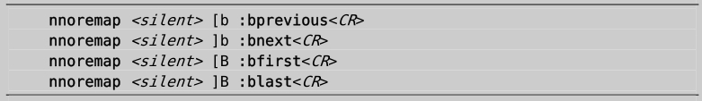
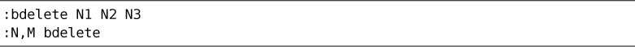

）。用:bnext命令可以切换到列表中的下一个缓冲区：
）。用:bnext命令可以切换到列表中的下一个缓冲区：技巧36用缓冲区列表管理打开的文件
在一次编辑会话中，可以打开多个文件。用Vim的缓冲区列表可以对这些文件进行管理。
了解文件与缓冲区的区别
就像其他任一文本编辑器一样，Vim允许读取、编辑文件，并保存修改。在工作过程中，我们通常会说“我们正在编辑一个文件”，但真实情况并不是这样，我们所编辑的只是文件在内存中的映像，也就是 Vim 术语中的“缓冲区”。
文件是存储在磁盘上的，而缓冲区则存在于内存中。当 Vim 打开一个文件时，该文件的内容被读入一个具有相同名字的缓冲区。刚开始，缓冲区的内容和文件的内容完全相同，但当我们对缓冲区做出修改时，二者的内容就会出现差别。如果我们决定保留这些修改，就可以再把缓冲区的内容写回到文件里。绝大多数Vim 命令都用来操作缓冲区，不过也有一些命令针对文件进行操作，这当中包括:write、:update及:saveas命令。
结识缓冲区列表
Vim允许我们同时在多个缓冲区上工作。先在shell里用下面的命令打开几个文件：
➾$ cd code/files
➾$ vim *.txt
《 2 files to edit
*.txt通配符会匹配当前目录下的两个文件a.txt和b.txt，因此上面的命令会让 Vim 打开这两个文件。当 Vim 启动时，它会显示一个窗口，窗口内的缓冲区对应着第一个文件。虽然另一个文件当前不可见，但其内容已经被载入到一个后台的缓冲区了，通过下面的命令可以看到这一点：
➾:ls
《 1 %a "a.txt" line 1
2 "b.txt" line 0
:ls命令会列出所有被载入到内存中的缓冲区的列表（参见:h :ls）。用:bnext命令可以切换到列表中的下一个缓冲区：
➾:bnext
➾:ls
《 1 # "a.txt" line 1
2 %a "b.txt" line 1
%符号指明哪个缓冲区在当前窗口中可见，而#符号则代表轮换文件。按<C-^>可以在当前文件和轮换文件间快速切换，在本例中，按一次会切换到a.txt，再按一次，就又回到b.txt了。
使用缓冲区列表
我们可以用4条命令来遍历缓冲区列表。:bprev和:bnext在列表中反向或正向移动，每次移动一项；而:bfirst和:blast则分别跳到列表的开头和结尾。把这些命令映射为更容易按的键或许更好些，在后面的“创建快速遍历Vim列表的按键映射项”部分中给出了一些映射建议。
:ls列表的开头有一个数字，它是在缓冲区创建时由 Vim 自动分配的编号。我们可以用:buffer N命令直接凭编号跳转到一个缓冲区（参见:h :b），或是用更直观的:buffer {bufname}格式实现同样的功能。{bufname}只需包含文件路径中足以唯一标识此缓冲区的字符即可。如果输入的字符串匹配了不止一个缓冲区列表中的条目，此时可以用 Tab 补全的方式在这些条目中选择（参见技巧32）。
:bufdo命令允许我们在:ls 列出的所有缓冲区上执行Ex命令（参见:h :bufdo）。不过在实际应用中，我发现:argdo更加实用，我们将在技巧37中结识这条命令。
创建快速遍历Vim列表的按键映射项
用:bn和:bp来遍历缓冲区列表可以省点儿事，不过还是比较麻烦。为了更快地遍历缓冲区列表，我采用了下面这些映射项，它们是在 Tim Pope的unimpaired.vim插件中定义的(1)：

Vim 已经用[和]键作为一系列相关命令的前缀了（参见:h [），因此上面这些映射项的风格与其一致。除上面这些之外，unimpaired.vim插件还提供了其他一些类似的映射项，分别用来遍历参数列表（[a和]a）、quickfix列表（[q 和]q）、位置列表（[l和]l）以及标签列表（[t和]t）。你自己去看看吧。
删除缓冲区
每次打开一个文件时，Vim 就会创建一个新的缓冲区。在第7章里，我们将学到一些打开文件的方法。如果想删除缓冲区，可以用:bdelete命令，命令格式如下：

注意：删除一个缓冲区并不会影响缓冲区所关联的文件，而只是简单地把该文件在内存中的映像删掉。如果我们想删除编号5～10（包含5和10）的缓冲区，可以执行:5,10bd；然而，如果想要保留编号为8的缓冲区的话，那么就只能用:bd 5 6 7 9 10了。
缓冲区的编号由 Vim 自动分配，没有办法手动改变此编号。因此，如果想删除一个或多个缓冲区，先得进行一番查找以便找出它们的编号，而这一过程会比较耗时。因此，除非有充足的理由要删除某个缓冲区，否则我才不会去自找麻烦。这样一来，:ls列表中的文件就是我在此编辑会话中打开的所有文件。
Vim内置的缓冲区管理功能缺乏灵活性。如果我们想对缓冲区进行组织，使其满足工作过程的需要，使用缓冲区列表并不是最佳选择。相反，我们最好是把工作区划分成多个分割窗口、标签页，或是使用参数列表。接下来的几个技巧将会介绍这些内容。